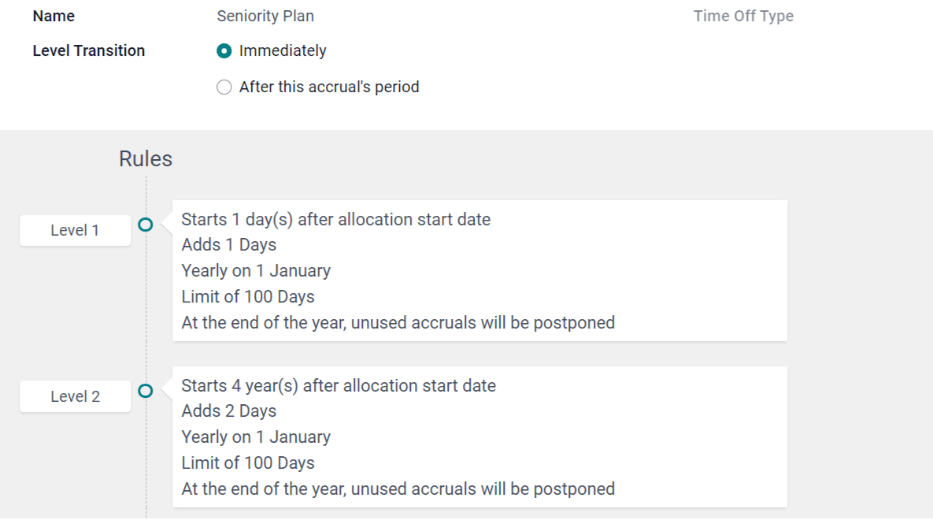
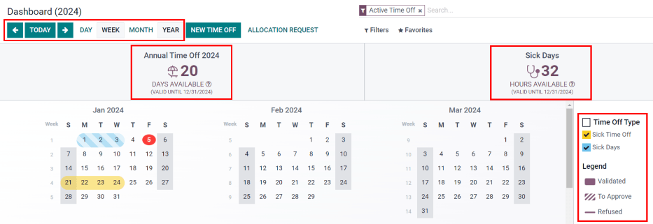

Tiempo personal¶
La aplicación Tiempo personal de Odoo es la ubicación centralizada en donde se almacena toda la información relacionada a tiempo personal, como solicitudes, días disponibles, asignaciones, aprobaciones y reportes.
Los usuarios pueden solicitar tiempo personal, los gerentes pueden aprobar solicitudes de permisos, asignar tiempo personal a personas, equipos o toda la empresa. También se pueden elaborar reportes para ver cuánto tiempo personal (y cuáles de sus tipos) se está utilizando, crear planes de acumulación y establecer días festivos.
Nota
Tome en cuenta que solo los usuarios que cuentan con permisos de acceso específicos pueden visualizar todas las funciones de la aplicación Tiempo personal.
Todos los usuarios pueden acceder a las secciones Mi tiempo personal e Información general de la aplicación Tiempo personal, para todas las otras secciones deben contar con permisos de acceso específicos.
Consulte la documentación sobre Crear un nuevo empleado para obtener más información relacionada con la manera en que los permisos de acceso influyen en la aplicación Tiempo personal, en especial la sección relacionada con la configuración de la pestaña de información de trabajo.
Configuración¶
Primero debe configurar los tipos de tiempo personal para que pueda asignárselo a los empleados y para que los empleados puedan solicitarlo y utilizarlo.
Tipos de tiempo personal¶
Para consultar los tipos de tiempo personal que tiene configurados, vaya a . Los tipos de tiempo personal aparecerán en una vista de lista. La aplicación Tiempo personal incluye cuatro ya configurados: Tiempo personal pagado, Tiempo personal por enfermedad, Sin pagar y Días compensatorios. Puede modificar cualquiera de estos para adaptarlo a las necesidades de su empresa o puede usarlos tal y como están configurados.
Crear tipos de tiempo personal¶
Vaya a para crear uno nuevo. Una vez allí, haga clic en el botón Nuevo para abrir un formulario de tipo de tiempo personal vacío.
Escriba el nombre para un tipo de tiempo personal en específico en la línea vacía ubicada en la parte superior del formulario, como Permiso por enfermedad o Vacaciones, y después ingrese la siguiente información en el formulario:
Sección de solicitudes de tiempo personal¶
Aprobación: seleccione el tipo de aprobación necesario para ese tipo de tiempo personal. Las opciones disponibles son las siguientes:
Sin validación: este tipo de tiempo personal no necesita que lo validen. La solicitud de tiempo personal se aprueba en automático al realizarla.
Por el encargado de tiempo personal: solo el encargado de tempo personal especificado y establecido en este formulario en el campo Encargado de tiempo personal notificado deberá aprobar la solicitud. Esta es la opción que seleccionada de forma predeterminada.
Por aprobador de empleado: solo el aprobador especificado para tiempo personal de ese empleado, configurado en la pestaña Información de trabajo en el formulario del empleado, deberá aprobar la solicitud.
Por aprobador de empleado y encargado de tiempo personal: tanto el aprobador de tiempo personal especificado y el encargado de tiempo personal del empleado deberán aprobar la solicitud.
Encargado responsable del tiempo personal: seleccione a la persona responsable de aprobar las solicitudes y las asignaciones para este tipo de tiempo personal en específico.
Tomar tiempo personal por: seleccione el formato correspondiente para la solicitud de tiempo personal con el menú desplegable. Las opciones disponibles son las siguientes:
Día: si el tiempo personal solo se puede solicitar en intervalos de días completos (es decir, 8 horas).
Medio día: si el tiempo personal solo se puede solicitar en intervalos de medios días (es decir, 4 horas).
Horas: si el tiempo personal se puede tomar en intervalos por horas.
Descontar horas adicionales: seleccione esta casilla sí las solicitudes de tiempo personal se toman en cuenta para cualquier hora adicional acumulada por el empleado.
Example
Por ejemplo, si un empleado trabajó dos (2) horas adicionales en la semana y solicita un permiso por cinco (5) horas, entonces la solicitud solo sería por tres (3) horas, ya que primero se toman las otras dos (2) horas adicionales que trabajó y se restan de la solicitud.
Permitir adjuntar justificantes: seleccione esta casilla para que el empleado pueda adjuntar documentos a su solicitud de tiempo personal. Esto es útil en aquellas situaciones donde se necesita de algunos documentos, como un documento de incapacidad médica a largo plazo.
Tipo de permiso o de tiempo personal: seleccione el tipo de permiso correspondiente con el menú desplegable, puede ser Ausencia u Otro.
Empresa: si creó varias empresas en la base de datos y este tipo de tiempo personal solo aplica para una, selecciónela con el menú desplegable. Si deja este campo vacío, el tipo de tiempo personal será para todas las empresas de la base de datos.
Sección de solicitudes de asignación¶
Necesita asignación: seleccione Sí si debe asignar el tiempo personal a los empleados, pero si pueden solicitarlo sin que se los haya asignado con anterioridad, seleccione Sin límite. Las siguientes opciones no aparecerán en el formulario si seleccionó Sin límite.
Solicitudes de empleados: seleccione Solicitudes de días adicionales permitidas si el empleado puede solicitar más tiempo personal del que tiene asignado.
Example
Por ejemplo, si el empleado tiene asignados diez (10) días en este tipo de tiempo personal en específico y esta opción está habilitada, entonces el empleado puede solicitar más de diez (10) días.
Seleccione la opción No permitido si los empleados no deberían poder solicitar más tiempo personal del que tienen asignado.
Aprobación: seleccione el tipo de aprobación necesaria para la asignación de este tipo de tiempo personal en particular.
No necesita validación indica que no es necesaria ninguna aprobación.
Aprobación del encargado de tiempo personal indica que el encargado de tiempo personal configurado en ese formulario debe aprobar la asignación.
Establecido por el encargado de tiempo personal indica que el encargado de tiempo personal configurado en ese formulario debe asignar el tiempo personal.
Sección de Nómina¶
Seleccione el Tipo de entrada de trabajo de la lista desplegable en caso de que el tipo de tiempo personal deba crear Entradas de trabajo en la aplicación Nómina.
Sección de Hojas de horas¶
Nota
La sección Hojas de horas solo aparece si el usuario se encuentra en modo de desarrollador. Consulte el documento Modo de desarrollador (modo de depuración) para obtener más información sobre cómo acceder a este.
Cuando un empleado toma tiempo personal y también usa las hojas de horas, Odoo crea entradas en la hoja de horas para ese tiempo. Esta sección define cómo registrarlas.
Proyecto: seleccione el proyecto en el que aparecen las entradas del tipo de tiempo personal.
Tarea: seleccione la tarea que aparece en la hoja de horas para este tipo de tiempo personal. Las opciones son Tiempo personal, Reunión y Capacitación.
Sección de opciones de visualización¶
Color: seleccione el color a utilizar en el tablero de la aplicación Tiempo personal.
Imagen de portada: seleccione el icono a utilizar en el tablero de la aplicación Tiempo personal.
Nota
Los únicos campos necesarios en el formulario de tipo de tiempo personal son el nombre del tipo de tiempo personal, Aprobación, el encargado responsable del tiempo personal, Tomar tiempo personal por, Tipo de permiso o de tiempo personal y la sección Solicitudes de asignación.
Planes de acumulación¶
Es posible obtener tiempo personal a través de los planes de acumulación. Es decir, por cada cantidad de tiempo especificada que los empleados trabajan (hora, día, semana, etc), ganan o acumulan una cantidad específica de tiempo personal.
Example
Si un empleado acumula un día de vacaciones por cada semana trabajada, ganaría 0.2 días de vacaciones por cada hora que trabaja. Al final de una semana laboral de cuarenta (40) horas, obtendrían un día completo de vacaciones (8 horas).
Crear planes de acumulación¶
Vaya a para crear uno nuevo. Una vez allí, haga clic en el botón Nuevo para abrir un formulario deplan de acumulación en blanco.
Escriba el nombre del plan de acumulación en el campo Nombre. Si el plan de acumulación solo se aplica a un tipo de tiempo personal en específico, entonces selecciónelo en el menú desplegable. Si este plan de acumulación está disponible para todos los tipos de tiempo personal, deje el campo vacío.
Después, seleccione cómo se produce la transición de nivel, elija entre De inmediato o Después de este periodo de acumulación. De forma predeterminada, el primer nivel comienza al aprobar una solicitud de tiempo personal si el tiempo personal está basado en un plan de acumulación. Si selecciona De inmediato, entonces el siguiente nivel comienza de acuerdo con el periodo establecido en el nivel. Si selecciona Después de este periodo de acumulación, el siguiente nivel no comienza hasta que el primer nivel se complete según las reglas que estableció allí.
Reglas¶
Es necesario crear reglas para que el plan de acumulación adquiera tiempo personal.
Para crear una regla haga clic en el botón Agregar un nuevo nivel que se encuentra junto a Reglas, aparecerá el formulario emergente Crear nivel.
Complete los siguientes campos del formulario:
Empezar después de (#) (periodo) después de la fecha de inicio de la asignación: proporcione el número y el valor del periodo que debe pasar antes de que un empleado empiece a acumular tiempo personal. El primer valor es numérico, así que en el primer campo deberá escribir un número.
Después seleccione el tipo de periodo con el menú desplegable del segundo campo. Las opciones disponibles son días, meses y años.
Según el tiempo trabajado: seleccione esta casilla si la acumulación de tiempo personal está basada en el tiempo que el empleado ha trabajado. Si un empleado toma tiempo personal que no se considera un día laborable, Odoo no contará ese día para su plan de acumulación.
Rate (#) (tiempo): proporcione la tasa de tiempo personal que se acumula. El primer valor es numérico, así que deberá escribir un número en el primer campo. No es necesario que sea entero, puede agregar cualquier valor decimal.
Luego, en el segundo campo, seleccione el tipo de tiempo a acumular con el menú desplegable. Las opciones son días u horas.
Frecuencia (X): seleccione la frecuencia con la que el empleado acumulará tiempo personal en esta regla con el menú desplegable. Las opciones son Diario, Semanal, Dos veces al mes, Mensual, Dos veces al mes o Anual.
Aparecerán más campos relacionados con la renovación de la acumulación según la opción que elija.
Example
Si el empleado debe recibir un día de vacaciones por cada semana que trabaja, entonces la Tasa debe ser 1 y el valor en Frecuencia deberá ser Frecuencia (semanal) en (viernes). Solo aparecerán los campos Frecuencia y Día de la semana.
Si el empleado debe recibir diez (10) días de vacaciones al año el día primero de enero, entonces la Tasa debe ser 10 y el valor en Frecuencia deberá ser Frecuencia (anual) el (1) de (enero). Aparecerán los campos Frecuencia, Fecha y Mes.
Limitar a: proporcione una cantidad máxima de días que el empleado puede acumular con este plan.
Al final del año, las acumulaciones sin utilizar serán: seleccione qué ocurrirá con el tiempo personal sin utilizar en el menú desplegable.
Las opciones disponibles son Transferidas al próximo año, que transfiere el tiempo que no se utilizó al siguiente año calendario, y Perdidas, que indica que si ese tiempo no se usó, entonces ya no estará disponible.

Una vez que haya terminado de completar el formulario, haga clic en Guardar y cerrar para realizar lo pertinente con el formulario o en Guardar y crear nuevo para guardar el formulario y crear una nueva regla. Agregue tantos niveles como sea necesario.
Días festivos¶
La mayoría de los países tienen días festivos públicos o nacionales y, en algunos casos, algunas empresas pueden tener días específicos en los que cierran o proporcionar días adicionales como días festivos.
Es importante configurar estos días en Odoo para que los empleados sepan qué días tienen libres y no tengan que solicitar tiempo personal en los que ya tienen establecidos como días festivos (es decir, días no laborables).
Crear días festivos¶
Para crear un día festivo, vaya a .
Todos los días festivos aparecen en una vista de lista.
Haga clic en el botón Nuevo, aparecerá una línea nueva en la parte inferior de la lista.
Complete la siguiente información:
Nombre: escriba el nombre del día festivo.
Empresa: la empresa actual completa este campo de forma predeterminada si se encuentra en una base de datos multiempresa. No es posible editar este campo.
Fecha de inicio: seleccione la fecha y hora de inicio del día festivo con el selector de fecha y hora. Este campo está configurado para la fecha actual de forma predeterminada. La hora de inicio se establece según la hora de inicio para la empresa (según los horarios laborales). Si la computadora del usuario está configurada en una zona horaria distinta, la hora de inicio se ajusta según la diferencia en comparación con la zona horaria de la empresa.
Fecha de finalización: seleccione la fecha y hora de finalización del día festivo con el selector de fecha y hora. Este campo está configurado para la fecha actual de forma predeterminada y la hora de inicio se establece según la hora de finalización para la empresa (según los horarios laborales). Si la computadora del usuario está configurada en una zona horaria distinta, la hora de inicio se ajusta según la diferencia en comparación con la zona horaria de la empresa.
Example
Una empresa está ubicada en San Francisco y su horario laboral es de 9:00 a. m. a 6:00 p. m. (una jornada laboral de ocho (8) horas con un descanso de una hora para comer). Un usuario se encuentra en Nueva York y la zona horaria de su computadora está configurada en EST. Al crear un día festivo, la hora de inicio será de 12:00 p. m. a 9:00 p. m., pues se toma en cuenta la zona horaria. Si otro usuario está en Los Ángeles y la zona horaria de su computadora está configurada en PST, al crear un día festivo, la hora será de 9:00 a. m. - 6:00 p. m.
Horas laborales: seleccione las horas laborales con el menú desplegable en caso de que el día festivo solo esté destinado a los empleados con un horario en específico. En caso de que no seleccione nada, el día festivo será para todos los empleados.
Tipo de entrada de trabajo: si usa la aplicación Nómina, este campo define de qué forma aparecerá la entrada de trabajo en un día feriado. Seleccione el tipo de entrada de trabajo en el menú desplegable.

Información general¶
Vaya a para visualizar los días por colores relacionados al tiempo libre de los usuarios y de sus equipos administrados. Aquí podrá consultar un calendario con el filtro predeterminado Mi equipo en una vista por mes.
Para cambiar el periodo del calendario, haga clic en los botones de Día, Semana, Mes o Año disponibles para que aparezca la vista que seleccionó.
Los miembros del equipo aparecen en sus respectivas líneas y el calendario muestra todos los permisos que solicitaron sin importar en qué estado se encuentren (Validado o Por aprobar).
Cada empleado tiene un color que se selecciona de forma aleatoria y no está relacionado con el tipo de tiempo personal que solicitaron.
El estado del tiempo personal se representa con el color se la solicitud de forma completa (Validado) o con líneas (Por aprobar).
El número de días u horas solicitadas aparece en la solicitud (si hay suficiente espacio disponible).
El gráfico de barras ubicado en la parte inferior del calendario muestra el número de personas que se estima no estarán en un día en específico. El número en la barra representa el número de empleados que no estarán disponibles en los días resaltados.
Pase el cursor sobre una entrada de tiempo personal para ver los detalles de esa entrada en específico. El número total de horas o días están incluidos, además de la hora de inicio y fin del tiempo personal.

Asignar tiempo personal¶
Una vez que terminó de configurar los tipos de tiempo personal y planes de acumulación, el siguiente paso es asignar o proporcionar tiempo personal a sus empleados. Esta sección solo es visible para aquellas personas que cuentan con los permisos de acceso de Encargado de tiempo personal o Administrador en la aplicación Tiempo personal.
Vaya a para crear una nueva asignación.
Allí podrá consultar una lista de todas las asignaciones actuales con sus respectivos estados.
Haga clic en Nuevo para asignar tiempo personal, aparecerá el formulario correspondiente vacío.
Después de proporcionar un nombre para la asignación en el primer campo vacío del formulario, complete la siguiente información:
Tipo de tiempo personal: en el menú desplegable seleccione el tipo de tiempo personal que recibirán los empleados.
Tipo de asignación: seleccione Asignación regular o Asignación acumulada.
Plan de acumulación: el campo Plan de acumulación aparecerá si en Tipo de asignación selecciona Asignación acumulada. Con el menú desplegable seleccione el plan de acumulación relacionado a la asignación. Debe seleccionar un plan de acumulación para una asignación acumulada.
Periodo de validez o Fecha de inicio: si en Tipo de asignación selecciona Asignación regular, entonces este campo recibe el nombre de Periodo de validez.
Seleccione la fecha de inicio de la asignación con el calendario. Elija la fecha de vencimiento en el siguiente campo de fecha si la asignación expira. En caso contrario, deje el segundo campo de fecha vacío.
Si en Tipo de asignación selecciona Asignación acumulada, entonces este campo recibe el nombre de Fecha de inicio.
Seleccione la fecha de inicio de la asignación con el selector del calendario. Elija la fecha de vencimiento en el campo Ejecutar hasta si la asignación expira. Si no, deje el campo Ejecutar hasta vacío.
Duración: proporcione la cantidad de tiempo que recibirán los empleados. Este campo muestra el tiempo en horas o en días según la configuración del Tipo de tiempo personal.
Modo: seleccione cómo se proporcionará la asignación con el menú desplegable. Esta selección determina quién recibe la asignación de tiempo personal. Las opciones son Por empleado, Por empresa, Por departamento o Por etiqueta de empleado.
Según lo que haya elegido en Modo, el campo recibirá el nombre de Empleados, Empresa, Departamento o Etiqueta de empleado.
Con el menú desplegable seleccione a los empleados, empresas, departamentos o etiquetas de empleados que deben recibir este tiempo personal.
Si se trata de empleados o etiquetas de empleados puede seleccionar tantas como lo desee.
Si se trata de empresas o departamentos, solo puede seleccionar uno.
Agregue un motivo…: si necesita agregar una descripción o nota para explicar la asignación de tiempo personal escríbala en este campo. Está ubicado en la parte inferior del formulario.
Solicitar tiempo personal¶
Los empleados pueden solicitar tiempo personal luego de recibir una asignación. Estas solicitudes se pueden realizar de dos formas, desde el tablero o desde la vista Mi tiempo personal.
Para acceder al tablero, vaya a . Esta es la vista predeterminada de la aplicación Tiempo personal.
Para acceder a Mi tiempo personal, vaya a . Aquí podrá consultar la vista de lista de todas las solicitudes de tiempo personal del empleado.
Para crear una nueva solicitud de tiempo personal, haga clic en el botón Nuevo del tablero principal de la aplicación Tiempo personal o en el botón Nuevo de la vista de lista de Mi tiempo personal. Ambos botones abrirán un formulario de solicitud de tiempo personal.
Proporcione la siguiente información en el formulario:
Tipo de tiempo personal: en el menú desplegable seleccione el tipo de tiempo personal a solicitar.
Fechas: seleccione las fechas correspondientes al tiempo personal. Hay dos campos que debe completar, De y Al. Haga clic en De o en Al para abrir sus respectivos calendarios desplegables.
Haga clic en la fecha de inicio y luego en la fecha de finalización. Las fechas de inicio y fin que haya seleccionado aparecerán en color morado oscuro. Las fechas entre ellas (en caso de que las haya) aparecerán en un morado más tenue.
Si solicita tiempo personal para un solo día es necesario que haga clic en esa fecha en el campo de fecha de inicio y que vuelva a seleccionarla en la fecha de finalización.
Haga clic en el botón Aplicar una vez que haya seleccionado las fechas adecuadas.
Las fechas ahora aparecerán en los campos De y Al.
Medio día: marque esta casilla si la solicitud de tiempo personal es de medio día. Al seleccionar esta opción, el campo de fecha Duración desaparece y se reemplaza con un menú desplegable. Seleccione Mañana o Tarde para indicar la mitad del día necesaria.
Horas personalizadas: seleccione esta casilla si el tiempo personal a solicitar no es de un día completo o medio día. Los campos De y Al aparecerán abajo si elige esta opción y deberá seleccionar la hora de inicio y finalización de la solicitud de tiempo personal con el menú desplegable.
Duración: este campo se actualiza de forma automática al completar la sección Fecha. En ese caso, se actualiza en automático para mostrar el tiempo personal total solicitado. Este campo es en horas o días, según lo que haya seleccionado en la fecha.
Descripción: proporcione una descripción sobre la solicitud de tiempo personal, debe incluir todos los detalles necesarios que los gerentes y aprobadores pudieran necesitar para aprobar la solicitud.
Justificante: este campo solo aparece cuando el Tipo de tiempo personal elegido permite adjuntar documentos. Haga clic en el botón Adjuntar archivo, esta acción abrirá la ventana del explorador de archivos.
Diríjase a los archivos que desea adjuntar y después haga clic en el botón Abrir. Los archivos aparecerán en el formulario de solicitud de tiempo personal. Es posible adjuntar varios documentos en caso de que sea necesario.
Una vez que haya terminado de completar el formulario haga clic en Guardar. Esta acción almacenará la información y enviará la solicitud.
Solicitar una asignación¶
Un empleado puede solicitar una asignación de tiempo personal si ya utilizó todo el que tenía disponible o está próximo a terminárselo. Hay dos maneras de solicitar una asignación, desde el tablero o desde la vista Mis asignaciones.
Para acceder al tablero, vaya a . Esta es la vista predeterminada de la aplicación Tiempo personal.
Para acceder a Mis asignaciones, vaya a . Aquí podrá consultar la vista de lista de todas las asignaciones del empleado.
Para crear una nueva solicitud de asignación, haga clic en el botón Solicitud de asignación del tablero principal de la aplicación Tiempo personal o en el botón Nuevo de la vista de lista de Mis asignaciones. Ambos botones abrirán un formulario para una nueva solicitud de asignación.
Después de proporcionar un nombre para la asignación en la primer línea vacía del formulario, complete la siguiente información:
Tipo de tiempo personal: en el menú desplegable seleccione el tipo de tiempo personal a solicitar para la asignación.
Periodo de validez: la fecha actual completa la fecha de inicio de forma predeterminada. Si no hay una fecha de vencimiento para el tipo de tiempo personal, no se completa ninguna fecha en la fecha de finalización. En caso contrario, la fecha se completa en automático en el campo de fecha de finalización cuando guarda el formulario.
Duración: escriba la cantidad de tiempo a solicitar. El formato (pueden ser días u horas) corresponde al formato establecido en el tipo de tiempo personal.
Agregue un motivo…: proporcione una descripción sobre la solicitud de asignación, debe incluir todos los detalles necesarios que los gerentes y aprobadores pudieran necesitar para aprobar la solicitud.
Una vez que haya terminado de completar el formulario haga clic en Guardar. Esta acción almacenará la información y enviará la solicitud.
Aprobaciones¶
La mayoría de las solicitudes de tiempo personal y asignaciones deben pasar por el proceso de aprobación antes que un empleado pueda recibir una asignación de tiempo personal. Las solicitudes necesitan una o dos aprobaciones, según la configuración de ese tipo de tiempo personal en particular.
Solo los usuarios que aprueban las solicitudes de tiempo personal y asignaciones pueden visualizar la sección Aprobaciones de la aplicación Tiempo personal.
Aprobar asignaciones¶
Vaya a para consultar las asignaciones que necesitan de aprobación. Las únicas asignaciones visibles en esta lista son de los empleados para los que el usuario tiene permiso de acceso de Encargado de tiempo personal o Administrador en la aplicación Tiempo personal.
Los filtros predeterminados configurados para visualizar la lista de asignaciones son Mi equipo y Empleado activo. De esta forma, solo visualizará a los empleados en el equipo del usuario (que gestionan) y a los empleados activos, los usuarios inactivos no aparecen
En el lado izquierdo de la pantalla están presentes varias opciones de agrupación para delimitar las solicitudes de asignación presentadas.
Las opciones son Por aprobar, Por enviar, Rechazado y Aprobado.
Para ver todas las solicitudes de asignación, haga clic en Todas.
También es posible visualizar las solicitudes de asignación por departamento. Haga clic en el departamento para consultar solo las asignaciones de ese departamento en específico.
Nota
Los grupos ubicados del lado izquierdo solo muestran las solicitudes de asignación que coinciden con los filtros predeterminados, Mi equipo y Empleado activo. Solo los estados de las solicitudes de asignación que entran en esos filtros aparecen en el lado izquierdo.
Por ejemplo, si no hay ninguna solicitud con el estado Por enviar, entonces esa opción del estado no aparecerá del lado izquierdo.
Todos los departamentos de los empleados del usuario aparecen en la lista. La lista estará vacía si no hay solicitudes de asignación que coincidan con los filtros preconfigurados.
Además, tiene la opción de eliminar cualquiera de los filtros preconfigurados si hace clic en el icono ✖️ (eliminar) de un filtro en específico.
La columna de estado muestra el estado de cada solicitud, este aparece en un color específico.
Las solicitudes de tipo Por aprobar, las solicitudes aprobadas aparecen en verde, las solicitudes por enviar (borradores) aparecen en azul y las solicitudes rechazadas aparecen en gris.
Para aprobar una solicitud de asignación haga clic en ✔ Validar ubicado al final de la línea. Para rechazarla, haga clic en ✖️ Rechazar.

Haga clic en cualquier lugar de la línea (excepto en ✔ Validar o ✖️ Rechazar) si necesita consultar más detalles sobre la solicitud de asignación.
Es posible hacer cambios en el formulario de solicitud de asignación según los permisos con los que cuente el usuario. Para modificar la solicitud, haga clic en el botón Editar, haga los cambios deseados y después haga clic en Guardar.
También es posible aprobar o rechazar la solicitud en este formulario. Haga clic en el botón Validar para aprobar la solicitud o en el botón Rechazar para rechazarla.
Aprobar tiempo personal¶
Vaya a para consultar las solicitudes de tiempo personal que necesitan de aprobación. Las únicas solicitudes visibles en esta lista son de los empleados para los que el usuario tiene permiso de acceso de Encargado de tiempo personal o Administrador en la aplicación Tiempo personal.
Los filtros predeterminados en la lista de tiempo personal son Por aprobar, Mi equipo, Empleado activo y Tiempo personal activo. Esto solo muestra las solicitudes de tiempo personal que necesitan ser aprobadas para los empleados actuales del equipo del usuario, que están activas y no en modo de borrador.
El lado izquierdo de la pantalla cuenta con varias opciones de agrupamiento para delimitar las solicitudes de tiempo personal visibles. Como solo aparecen las solicitudes que necesitan ser aprobadas, las únicas opciones de estado son Todos y Por aprobar.
Para visualizar las solicitudes con otros estados, primero elimine el filtro Por aprobar. Para ello, haga clic en el icono ✖️ (eliminar) ubicado junto al filtro Por aprobar para borrarlo.
Para visualizar las solicitudes de tiempo personal para departamentos en específico, haga clic en el departamento ubicado en el lado izquierdo. Solo aparecerán las solicitudes dentro del departamento seleccionado.
La columna de estado muestra el estado de cada solicitud, este aparece en un color específico.
Las solicitudes de tipo Por aprobar aparecen en amarillo y son las únicas visibles de forma predeterminada en la lista. Si elimina el filtro Por aprobar, entonces podrá visualizar todas las demás. Las solicitudes aprobadas aparecen en verde, las solicitudes por enviar (borradores) aparecen en azul y las solicitudes rechazadas aparecen en gris.
Para aprobar una solicitud de tiempo personal haga clic en 👍 Aprobar ubicado al final de la línea. Para rechazarla, haga clic en ✖️ Rechazar.

Haga clic en cualquier lugar de la línea (excepto en 👍 Aprobar o ✖️ Rechazar) si necesita consultar más detalles sobre la solicitud de tiempo personal y para abrir el formulario correspondiente. Es posible que un usuario haga cambio según los permisos con los que cuenta.
Para modificar la solicitud haga clic en el botón Editar, haga los cambios necesarios y después haga clic en Guardar.
También es posible aprobar o rechazar la solicitud en este formulario. Haga clic en el botón Aprobar para aprobar la solicitud o en el botón Rechazar para rechazarla.
Mi tiempo personal¶
La sección Mi tiempo personal de la aplicación Tiempo personal incluye el tablero del tiempo personal, así como las solicitudes y asignaciones del usuario.
Tablero¶
Todos los usuarios tienen acceso al tablero de tiempo personal, además de que es la vista predeterminada de la aplicación Tiempo personal. También es posible acceder desde .
La vista predeterminada es la del año actual y el día en curso aparece en rojo.
Para cambiar la vista, haga clic en el botón deseado en la parte superior. Las opciones son Día, Semana, Mes o Año (esta es la vista predeterminada).
Para cambiar las fechas que está visualizando, solo haga clic en las flechas izquierda y derecha ubicadas del lado izquierdo y derecho del botón Hoy. La vista del calendario se ajustará en incrementos según la vista que haya elegido.
Por ejemplo, si selecciona Semana, las flechas ajustarán la vista por una semana.
Para cambiar la vista en cualquier momento a una que incluya la fecha actual solo haga clic en el botón Hoy.
Arriba de la vista de calendario podrá encontrar un resumen de los días disponibles de tiempo personal de los usuarios. Cada tipo de tiempo personal asignado aparece en su propia sección y cada una de ellas incluye su tipo e icono correspondientes, el tiempo disponible (en horas o días) y una fecha de vencimiento (en caso de cuente con una).
La simbología ubicada del lado derecho de la vista del calendario muestra los diferentes tipos de tiempo personal con sus respectivos colores. También aparecen los estados de las solicitudes de tiempo personal.
El tiempo personal validado aparece en un color sólido (en el color que especificó en la sección correspondiente de tipos de tiempo personal). Las solicitudes de tiempo personal que aún necesitan aprobación aparecen con líneas blancas en el color y las solicitudes rechazadas tienen una línea de color que tacha las fechas correspondientes.
Es posible solicitar tiempo personal desde el tablero. Haga clic en el botón Nuevo ubicado en la parte superior del tablero para abrir un formulario de tiempo personal.
También es posible elaborar nuevas solicitudes de asignación desde el tablero. Haga clic en el botón Solicitud de asignación ubicado en la parte superior del tablero para solicitar más tiempo personal. Esta acción abrirá un nuevo formulario de asignación.
Mi tiempo personal¶
Vaya a para ver una lista con todas las solicitudes de tiempo personal de los usuarios. Allí podrá consultar todas las solicitudes de tiempo personal en la vista de lista, tanto las anteriores como las actuales.
Además del nombre del usuario, la lista incluye la siguiente información de cada solicitud: el tipo de tiempo personal, la descripción, la fecha de inicio, la fecha de finalización, la duración y su estado.
Es posible solicitar tiempo personal desde esta vista. Haga clic en el botón Nuevo para solicitar tiempo personal.
Mis asignaciones¶
Vaya a para ver una lista con todas las asignaciones de los usuarios. Allí podrá consultar todas las asignaciones y sus solicitudes en la vista de lista.
La información que puede consultar incluye el tipo de tiempo personal, la descripción, la duración, el tipo de asignación y su estado.
También es posible crear una solicitud de asignación desde esta vista. Haga clic en el botón Nuevo para solicitar una asignación.
Informes¶
La función de reportes permite que los usuarios conozcan el tiempo personal de su equipo, ya sea por empleado o por tipo de tiempo personal. Esto les permite ver qué empleados tienen un permiso, cuánto tiempo tomarán y qué tipos de tiempo personal están en uso.
Por empleado¶
Vaya a para visualizar un reporte de las solicitudes de tiempo personal por empleado.
El reporte predeterminado es un gráfico apilado de barras con los filtros Empleado activo y Tipo habilitados.
Cada empleado aparece en su propia columna y la barra muestra cuántos días de cada tipo de tiempo personal solicitaron.
El reporte se puede visualizar de otras formas. Haga clic en las distintas opciones que aparecen en la parte superior para ver los datos en una vista distinta.
Las opciones de gráficos son gráfico de barras, gráfico de líneas y gráfico circular. El gráfico de barras incluye una opción para presentar los datos de forma apilada. Tanto el gráfico de barras como el gráfico de líneas tienen opciones para presentar los datos en orden descendente o ascendente.

Por tipo¶
Para ver una lista del tiempo personal aprobado, organizado por tipo, vaya a . Allí aparecerá cada tipo de tiempo personal en su propia sección.
Haga clic en un tipo de tiempo libre para abrir la lista. Cada solicitud incluye la siguiente información: Empleado, Número de días, Tipo de solicitud, Fecha de inicio, Fecha de finalización, Estado y Descripción.
Los filtros predeterminados para este reporte son Solicitudes aprobadas, Empleado activo, el año actual y el tipo.